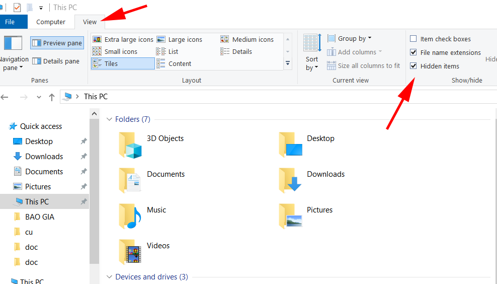

Hướng dẫn chi tiết cách mở file ẩn trong USB trên máy tính Windows
Việc hiểu biết cách quản lý các tệp tin một cách hiệu quả, bao gồm cả việc hiển thị các tệp tin ẩn trên các thiết bị của bạn là rất quan trọng đối với người dùng máy tính văn phòng. Hướng dẫn này cung cấp từng bước một về cách mở các file ẩn trên ổ USB khi sử dụng máy tính Windows.
Nguyên Nhân Tại Sao Xuất Hiện Các File Ẩn Trong USB
Khi sử dụng ổ USB, bạn có thể gặp phải tình trạng các tệp và thư mục bị ẩn mà không rõ lý do. Hiện tượng này có thể gây ra không ít phiền toái và lo ngại cho người dùng. Dưới đây là một số nguyên nhân chính khiến các tệp trong ổ USB có thể bị ẩn:
1. Cài Đặt Hệ Thống Làm Ẩn Tệp
Mặc định, hệ điều hành Windows và các hệ điều hành khác có thể được cấu hình để ẩn các tệp hệ thống nhất định để bảo vệ chúng khỏi sự can thiệp ngẫu nhiên. Các tệp này thường là các tệp hệ thống quan trọng hoặc tệp cấu hình ứng dụng mà không cần thiết phải truy cập thường xuyên.
2. Do Virus hoặc Malware Làm File Bị Ẩn
Một trong những nguyên nhân phổ biến nhất là sự xâm nhập của virus hoặc malware. Những phần mềm độc hại này có thể ẩn các tệp và thư mục để tránh bị phát hiện và loại bỏ. Chúng có thể tự sao chép và phát tán trong khi ẩn mình dưới dạng các tệp thông thường, gây nguy hiểm cho dữ liệu và hệ thống của bạn.
3. Lỗi Người Dùng Vô tình Ẩn File
Người dùng có thể vô tình đặt thuộc tính của tệp hoặc thư mục thành “ẩn”. Điều này có thể xảy ra khi bạn cố gắng thay đổi thuộc tính của tệp mà không nhận thức được hậu quả, hoặc do thao tác không chính xác trong các tùy chọn cài đặt.
4. Hỏng Hóc Phần Cứng Gây Ẩn Tệp
Tình trạng hư hỏng của ổ USB cũng có thể dẫn đến việc các tệp bị ẩn hoặc mất. Khi các phần của ổ bị hư hỏng, thông tin về các tệp và thư mục có thể không được đọc hoặc ghi chính xác, dẫn đến tình trạng các tệp không hiển thị.
5. Chương Trình Đồng Bộ Hóa Tệp
Nếu bạn sử dụng phần mềm đồng bộ hóa để quản lý tệp tin giữa nhiều thiết bị, phần mềm này có thể đã cấu hình một số tệp để không hiển thị trong quá trình đồng bộ. Điều này thường xảy ra trong một số ứng dụng đám mây khi chúng tự động ẩn các tệp nhất định để giảm bớt sự phức tạp trong quản lý tệp.
Hướng Dẫn Chi Tiết Cách Mở Các Tệp Ẩn trên USB trong Windows
Trước khi bắt đầu, hãy đảm bảo rằng hệ thống Windows của bạn đã được cập nhật để tránh bất kỳ vấn đề tương thích hoặc bảo mật nào. Kết nối ổ USB của bạn vào máy tính. Một khi hệ thống của bạn nhận dạng được ổ đĩa, bạn có thể bắt đầu tiến hành mở các tệp ẩn trên USB
Bước 1: Mở File Explorer
Bạn có thể truy cập File Explorer bằng cách nhấn Win + E hoặc tìm kiếm nó trong menu start. Đây là giao diện chính để quản lý tất cả các tệp và thư mục trên thiết bị Windows của bạn.
Bước 2: Điều Hướng đến Ổ USB của Bạn
Tìm ổ USB của bạn dưới mục "This PC" hoặc "My Computer" trong File Explorer. Nó thường xuất hiện dưới dạng một đĩa gắn ngoài trừ khi đã được đổi tên.
Bước 3: Truy Cập Tùy Chọn View
Nhấp vào tab "View" trên menu trên cùng của File Explorer. Phần này cho phép bạn tùy chỉnh cách bạn xem các tệp và thư mục trong cửa sổ Explorer.

Bước 4: Thay Đổi Cài Đặt để Hiển Thị Các Tệp Ẩn
Trong menu "View", bạn sẽ thấy một hộp kiểm có nhãn "Hidden items". Đánh dấu vào ô này để hiển thị các tệp và thư mục ẩn. Hành động này sẽ lập tức hiển thị các tệp và thư mục đã bị ẩn trước đó.
Bước 5: Đảm Bảo Tính Hiển Thị của Tệp
Sau khi kích hoạt tính năng hiển thị các tệp ẩn, hãy điều hướng qua ổ USB của bạn. Bạn nên có thể thấy các tệp và thư mục được tiền tố bằng dấu chấm (.) hoặc những thứ đã được đặt là ẩn trong thuộc tính của chúng. Nếu bạn vẫn không thấy các tệp ẩn mong đợi, hãy kiểm tra lại các cài đặt hoặc khởi động lại File Explorer.
Bằng cách làm theo các hướng dẫn này, bạn nên có thể tự tin hiển thị các tệp ẩn trên ổ USB của mình sử dụng máy tính Windows. Đối với những người dùng cần hỗ trợ quản lý tệp tin hoặc khắc phục sự cố từ xa, hãy cân nhắc sử dụng UltraViewer. Phần mềm điều khiển máy tính từ xa UltraViewer cho phép một người khác điều khiển hệ thống của bạn từ xa, lý tưởng để nhận sự trợ giúp tức thì từ xa. Đặc biệt hữu ích trong các môi trường chuyên nghiệp, nơi hỗ trợ IT có thể thể hiện các quá trình hoặc khắc phục sự cố mà không cần có mặt tại vị trí của bạn.

Hãy trải nghiệm UltraViewer hoàn toàn miễn phí ngay từ bây giờ để nâng cao hiệu quả làm việc văn phòng của bạn nhé!


Viết bình luận (Cancel Reply)